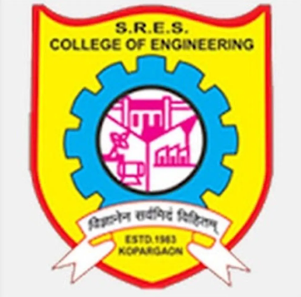
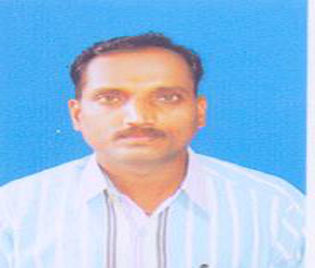

|  | Sanjivani College Of Engineering, Kopargaon |
Home |
Departments |
Placements |
About Us |
Gallery |
Contact |
|---|
The SRES’S, Sanjvani College of Engineering, Kopargaon was established in the year 1983, now it is an autonomous institute affiliated to Savitribai Phule Pune University. Department of Civil Engineering is an integral part of the institute since establishment of the institute. The department of civil engineering is accredited by NBA four times and achieved a different landmarks over the years with well qualified faculty members & modern equipped laboratories. Civil engineering department is recognized and famous for the academic excellence in the Pune University.
As a result of it department has produced many university rank holders and students of the department are continually succeeding in competitive examinations like MPSC, UPSC and GATE examinations. Beside the high quality teaching and learning, the department is also actively involved in research and development activities. The department is providing technical and advisory support through consultancy to the various government and private construction agencies.
The Civil Engineering Department is a part of the institute since its inception. The Department has grown over the years with qualified teaching faculty members who are passionate to impart quality education. The department laboratories are fully equipped with latest equipments, softwares and all necessary teaching aids. It is now recognized as one of the prominent departments and known for academic excellence under the Pune University. The department is having valid Accreditation by ‘NBA’ from 31 July 2015 to 31 June 2021. Besides high quality teaching and instruction at UG, PG and Ph. D., the department is actively involved in basic and applied research and consultancy services. The department is providing quality technical and advisory support through consultancy to various private construction agencies, State Government, Central Government projects.
We welcome you as an undergraduate student (B. Tech), Postgraduate student (M.Tech) and as a Research Scholar (Ph.D. in structural Engg) in Sanjivani. By choosing the best Institute, I wish everyone to complete your degree with flying colours and have a bright future.
